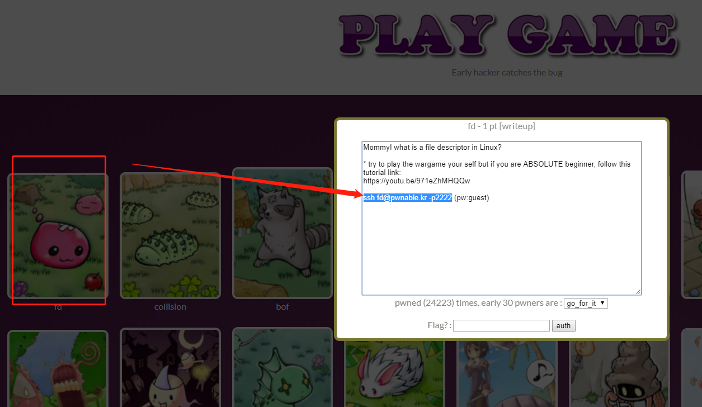
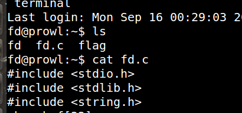
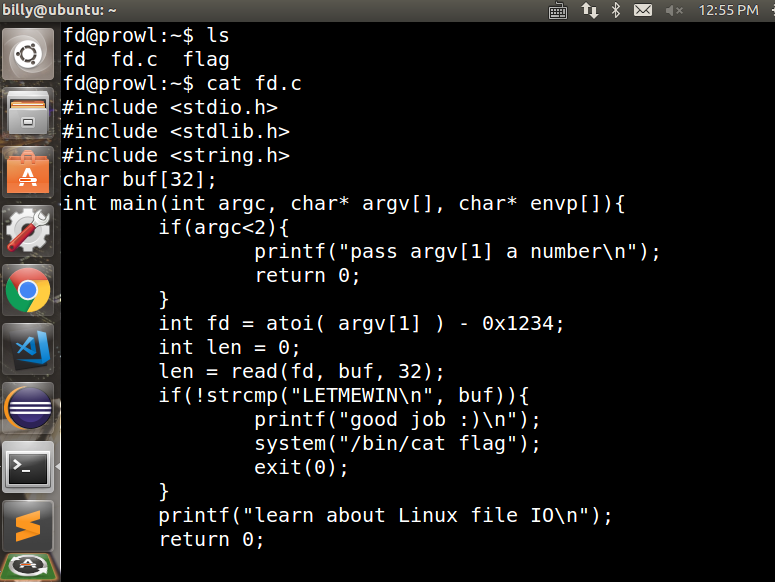
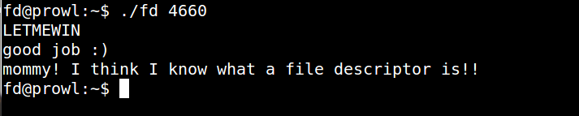

之前由于参加了某帽杯比赛，之后又参与了HW，所以一直对自己说的承诺没有兑现，从2019年09月16起，开始学习pwn，从Pwnable.kr这个网站入手，毕竟汇编太难啃，C也学的一知半解，
边实践，边总结吧，也不知道自己能不能坚持下来。。。
打开Pwnable.kr官网

打开虚拟机复制这段内容进入！
有三个文件：fd、fd.c、flag

打开fd.c查看源代码

1 |
|
这里对照网上大神的wp，看懂了源码大致思路，涉及的知识点如下:
- atoi 这个函数是将字符串转换成整型数的一个函数
- 定义函数：ssize_t read(int fd, void * buf, size_t count);
- 函数说明：read()会把参数fd 所指的文件传送count 个字节到buf 指针所指的内存中. 若参数count 为0, 则read()不会有作用并返回0. 返回值为实际读取到的字节数, 如果返回0, 表示已到达文件尾或是无可读取的数据,此外文件读写位置会随读取到的字节移动.
而0x1234的整型是4660
从代码来看，
目标：执行system(“/bin/cat flag”);
呢么则需要：strcmp(“LETMEWIN\n”, buf) == 0
因为当strcmp函数等于0时，结果即为真
呢么就需要设置buf = “LETMEWIN\n”，使得if判断语句返回真的结果
if(!strcmp(str1,str2);
strcmp returns 0 if str1 = str2
strcmp returns 1 if str1 > str2
strcmp returns -1 if str1 < str2
所以：read(fd, buf, 32)将buf设为”LETMEWIN\n”即可
又因为：
fd == 0为标准输入
fd == 1为标准输出
fd == 2为标准错误输出
那么我们只要控制了fd的值为标准输入，那么buf的值就可以用我们的键盘输入了，
目标是使fd为0，那么我们传进去的第一个参数就是0x1234，即十进制的4660
所以我们只需要输入为 4660，我们可以使fd == 0，然后从终端输入LETMEWIN后回车得到flag
Run fd
OK！！！
1 | fd@prowl:~$ ./fd 4660 |
